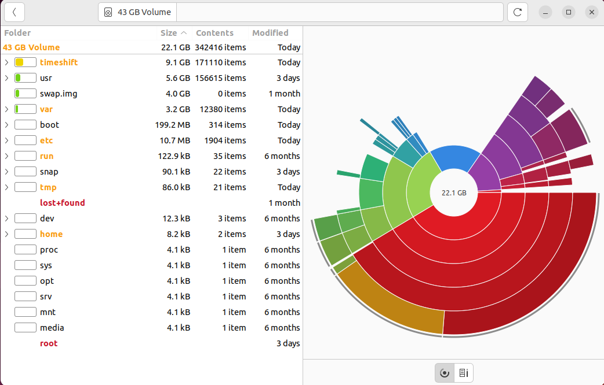
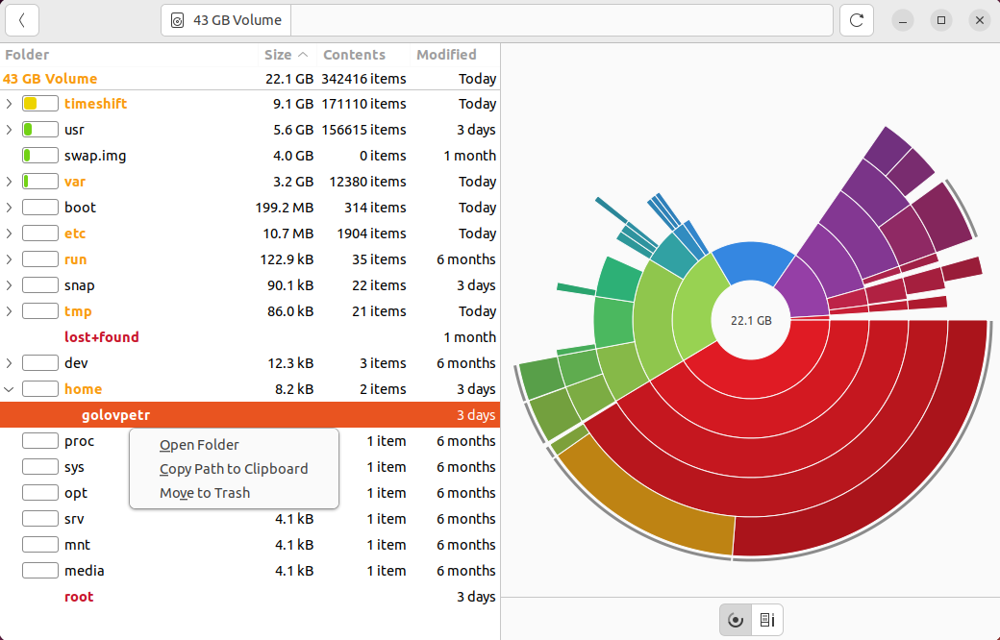
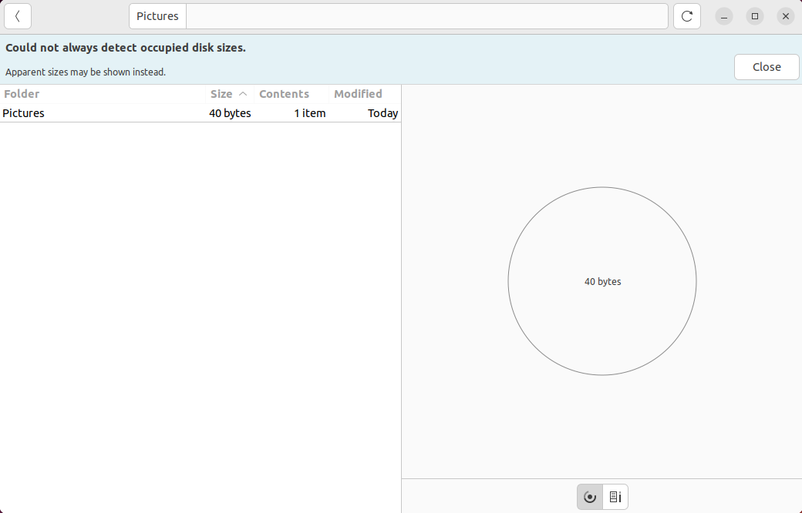

Baobab - это часть проекта GNOME, который является свободным и открытым программным обеспечением. GNOME - это графическая среда рабочего стола и набор приложений для Unix-подобных систем, таких как Linux. Таким образом, Baobab разрабатывается сообществом и входит в состав программных продуктов GNOME. Программы GNOME обычно создаются коллективными усилиями разработчиков, волонтёров и организаций, поддерживающих проект GNOME.
Ссылка на сайт прозводителя: ссылка
Baobab, также известная как GNOME Disk Usage Analyzer, представляет собой инструмент для анализа использования дискового пространства в среде рабочего стола GNOME. Вот общие возможности Baobab:
Информация о примонтированных устройствах - Baobab отображает примонтированные устройства, что позволяет пользователям видеть все доступные разделы и внешние устройства.
Информация об использовании пространства системой - Программа предоставляет общую информацию об использовании пространства системой, включая метаданные и служебные файлы.
Возможность выбора разделов для анализа - Пользователи могут выбирать конкретные разделы или папки для анализа, что удобно при фокусировке на определенных частях диска.
Экспорт отчетов - Baobab предоставляет возможность экспорта отчетов, что полезно для создания документации или архивирования результатов анализа.
Поддержка архивации файлов - В Baobab встроена поддержка архивации, что позволяет пользователям создавать архивы файлов напрямую из программы.
Интеграция с менеджером файлов - Baobab интегрирована с менеджером файлов Nautilus, что обеспечивает более удобный доступ к анализу и управлению дисками.
Просмотр содержимого раздела диска
Удаление данных
Сканирование папок
Baobab, также известная как GNOME Disk Usage Analyzer, предоставляет обширные возможности для анализа использования дискового пространства. Программа интегрирована в среду рабочего стола GNOME и предлагает визуализацию структуры данных, выделение крупных файлов и папок, а также информацию о типах файлов. Пользователи могут легко определить, какие файлы и директории занимают больше всего места на их дисках, благодаря графическому и интерактивному представлению дискового пространства.
Для домашних пользователей Baobab предоставляет возможность оптимизации дискового пространства, позволяя легко удалять ненужные файлы и эффективно управлять данными. Это полезно для организации мультимедийных файлов и освобождения места на диске.
В корпоративной среде Baobab может использоваться системными администраторами для анализа серверных ресурсов и оптимизации использования дискового пространства на общих ресурсах. Программа предоставляет единый и согласованный опыт использования, интегрируясь с средой рабочего стола GNOME.
Плюсы:
Минусы: